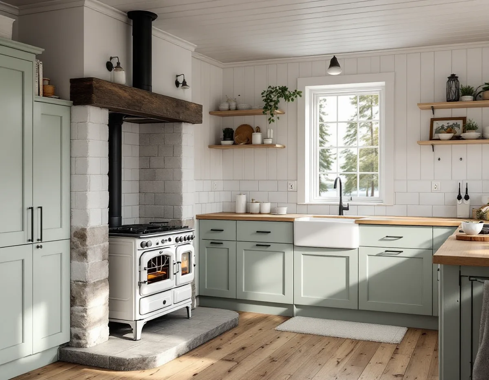
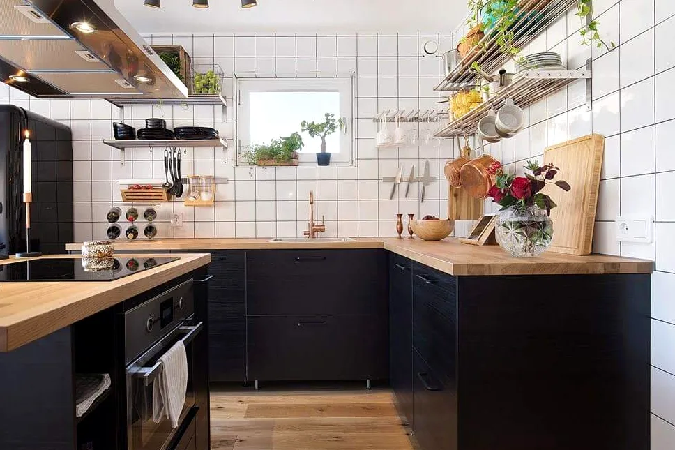

Platsbesök
Vi går igenom kök, eldstad, vattenintag och avlopp och tar reda på om huset har kommunalt vatten eller egen brunn.
På Mälaröarna kan köket stå i ett hus med egen eldstad eller egen brunn, och med de nya sorteringsreglerna ska fler fraktioner sorteras ut hemma. Geal Entreprenad AB bygger om kök i villor och fritidshus på Ekerö, med gratis platsbesök, skriftligt kostnadsförslag och ROT-avdraget direkt på fakturan.

Ekerö kommun skriver att den som vill installera eller göra en större ändring av en eldstad, braskamin, öppen spis eller kakelugn ska göra en anmälan till bygglovsenheten. Det gäller också när en spisinsats sätts in eller byts i en befintlig öppen spis, och när man byter bränsle i husets huvudsakliga värmekälla.
Till anmälan hör enligt kommunen en planritning där eldstadens placering är markerad, en fasadritning med skorstenen eller rökkanalen inritad, en kontrollplan och ett typgodkännande, en produktbeskrivning eller CE-märkning. Är anmälan komplett kommer beslutet inom fyra veckor, och med beslutet följer startbeskedet. När installationen är klar skickar man in sotarintyg, den ifyllda kontrollplanen och en ansökan om slutbesked. Eldstaden får inte användas innan slutbeskedet har kommit.
För oss styr det ordningen i bygget. Skåp, bänkskiva och väggbeklädnad runt en vedspis planeras efter de avstånd som tillverkaren anger, och eldstadens plats bestäms innan köksinredningen mäts in. En skorsten på taket kräver inget bygglov enligt kommunen, men en rökkanal längs fasaden kan behöva bygglov för fasadändring. Mer om taket kring skorstenen finns under takrenovering på Ekerö.

Sotningen i kommunen är ett uppdrag för Södertörns brandförsvarsförbund, som har upphandlat en sotare som skickar brev när det är dags. Om köksfläkten skriver kommunen att kravet på att inspektera imkanaler inte längre finns, eftersom risken för brand eller brandspridning genom dem är mycket låg.
Boverket påpekar dock i sin genomgång av lagändringarna från den 1 december 2025 att det krävs anmälan för vissa tekniska installationer, till exempel vatten, avlopp och ventilation. En spisfläkt som byts mot en likvärdig på samma plats är något annat än en ny kanal genom vindsbjälklaget, och det reder vi ut innan fläkten väljs.
Kommunen konstaterar att den som har eget avlopp för det mesta också har eget dricksvatten, och att brunnsägaren själv ansvarar för vattnets kvalitet och för att hålla brunnen i bra skick. Livsmedelsverket rekommenderar enligt kommunen att brunnsvattnet kontrolleras minst vart tredje år, och delar fler än två fastigheter på brunnen är det bra att testa minst en gång om året.
Ett nytt kök är ett bra tillfälle att ta ett prov. Visar svaret att vattnet behöver behandlas påverkar det vad som ska rymmas under diskbänken, och det är enklare att planera skåpet för ett filter innan stommen monteras än efteråt.
Har fastigheten kommunalt vatten och avlopp är det Roslagsvatten som ansvarar för det, och en anmälan ska skickas dit i god tid om en byggnad ska anslutas. Med eget avlopp är frågan en annan: kommunen skriver att den som bygger om så att det blir mer avloppsvatten kan behöva söka tillstånd eller anmäla ändring av den enskilda avloppsanläggningen. Om vattnet i badrummet kan du läsa under badrumsrenovering på Ekerö.
I dag lägger hushållen på Ekerö matavfallet i Gröna påsen, som slängs i den vanliga soptunnan och sorteras ut maskinellt. Kommunen skriver att den gröna plastpåsen ersätts av en brun papperspåse när de nya kärlen kommer. Då läggs matavfallet i den bruna påsen och påsen direkt i kärlets fack för matavfall, och den bruna påsen ska inte läggas i en plastpåse.
Bakgrunden är nya regler om fastighetsnära insamling av förpackningar, som enligt kommunen ska gälla senast 2027 och kallas Närsorterat. Matavfall, restavfall och förpackningar av papper, plast, metall och glas ska sorteras ut nära bostaden. Roslagsvatten sköter kommunens sophantering sedan årsskiftet 2024/2025.
För köket betyder det fler fraktioner att hitta plats för. Vi föreslår att sorteringen planeras som en egen utdragslåda under diskbänken, med ett luftigt fack för papperspåsen, och att skåpet bredvid tar förpackningarna om utrymmet räcker. Det är enklare att bestämma på ritningen än att bygga om när de nya kärlen har kommit. Ska väggarna målas i samma veva, se målare på Ekerö, och om planering i stort på sidan om köksrenovering.
Vi går igenom kök, eldstad, vattenintag och avlopp och tar reda på om huset har kommunalt vatten eller egen brunn.
Ska en vedspis eller kakelugn in tar vi fram underlaget till anmälan innan inredningen ritas.
Rivning, snickeri, el och VVS står som egna poster, och arbete skiljs från material.
Gamla skåp tas bort och rör, el och fläkt dras enligt den nya planen.
Stomme, sorteringslådor, bänkskiva och vitvaror monteras.
Vi provar fläkt, blandare och vitvaror och går igenom köket med dig.
I ett småhus räknar Skatteverket det som rotarbete att montera fast köksinredning och installera vitvaror i samband med en omfattande renovering, att modernisera elen och byta uttag och att installera blandare och kranar. Även att installera och reparera braskaminer och att mura och reparera skorstenar och kakelugnar ger avdrag. Avdraget är 30 procent av arbetskostnaden, högst 50 000 kr per person och år och högst 75 000 kr tillsammans med rutavdrag.
Du ska äga bostaden och helt eller delvis bo i den, och ett fritidshus som du själv använder räknas. Material och resor ger inget avdrag. Geal drar avdraget direkt på fakturan.
Mest avgör om köket byggs om på samma plats eller om vatten, avlopp och fläkt flyttas, och om en eldstad ska in. En vedspis lägger till anmälan, skorstensarbete och mer anpassning av skåpen runt den. Efter ett gratis platsbesök får du ett skriftligt kostnadsförslag.
Planering, el, VVS, fläkt och väggar.
Köksrenovering i Stockholm →Takbyte, takbesiktning och plåtarbeten.
Takläggare på Ekerö →Stenhamra, Kungshatt och Adelsö.
Takrenovering på Ekerö →Utanför plan, strandskydd och eget avlopp.
Attefallshus på Ekerö →Anmälan, mjukt vatten och eget avlopp.
Badrumsrenovering på Ekerö →Nytt hus, vattenskydd och bergvärme.
Byggföretag på Ekerö →Väder, säsong och torktider på öarna.
Fasadmålning på Ekerö →Egnahem, villaområden och äldre gårdar på Ekerö.
Fasadrenovering på Ekerö →Sommarvillor och 60-talsvillor på Ekerö.
Fönsterbyte på Ekerö →Villor i Stenhamra och omgjorda sommarhus.
Golvläggare på Ekerö →Slipa trägolv som ligger på golvvärme.
Golvslipning på Ekerö →Sommarvillor, stugor och villor på Mälaröarna.
Målare på Ekerö →Takvatten, solceller och plåttak på Ekerö.
Plåtslagare på Ekerö →Altan, gäststuga och snickeri nära Mälaren.
Snickare på Ekerö →Tapet på timmer, papp och skivor.
Tapetsering på Ekerö →